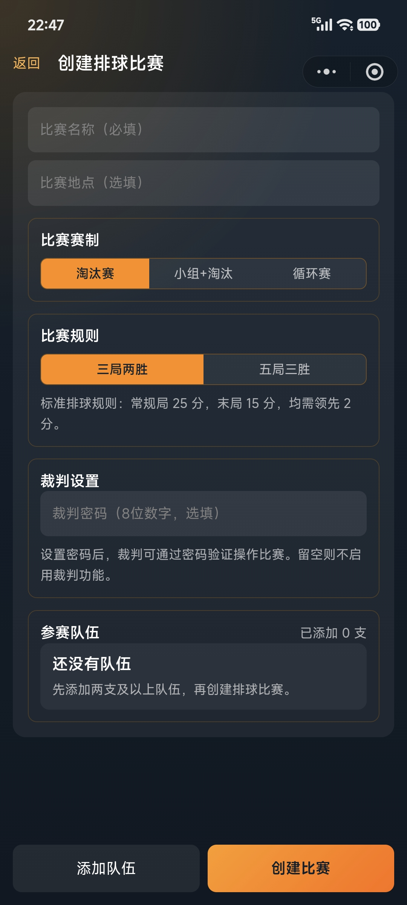
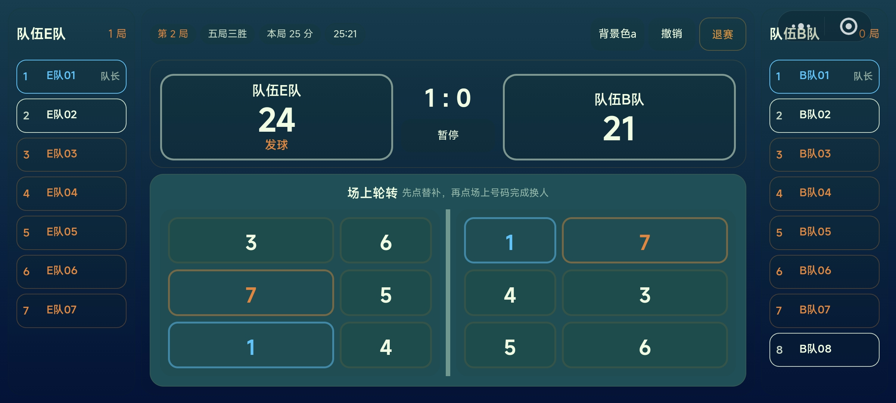
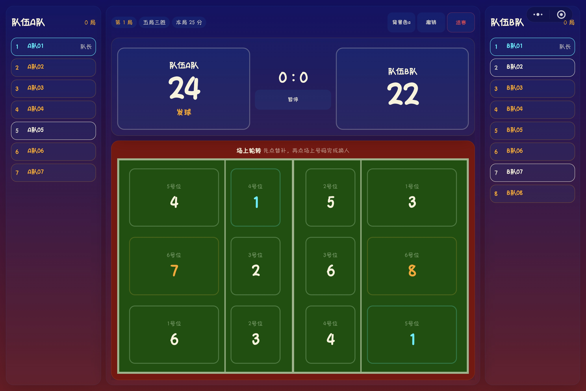

手机端
- 优先保证比分和加分操作清晰
- 适合移动场景和临时裁判
- 界面更集中，减少横向信息负担
排球赛事
排球的现场信息密度更高，因此系统把首发阵容、自由人、队长、换人、换边、发球权和比赛记录统一放进同一条操作链路。
排球赛事固定以队伍为参赛单位。创建赛事时录入队员信息，比赛开始前再填写每局阵容。



两个端使用同一套记分逻辑。手机端适合轻量现场操作，Pad 端更适合长时间执裁和信息密集展示。


排球记分不只保存最终比分，也会保存换人、暂停、队长变更、换边、阵容快照等事件。


Phone 和 Pad 展示不同，但记分、轮转、自由人和结算逻辑由同一个核心模块支撑。
屏幕左右可以交换，但事件和比分始终归属原始 left/right 参赛方。